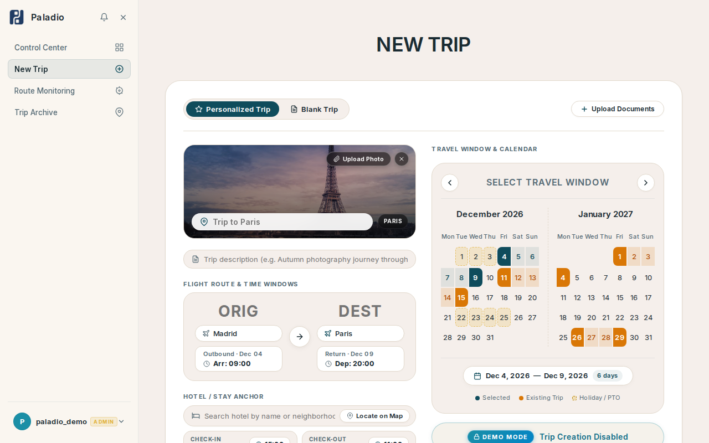

Creating trips and intake workflows¶
Launch a Personalized Trip powered by the deterministic 9-node LangGraph swarm and C++20 optimizer, start from a Blank Trip canvas, or bootstrap an itinerary from flight confirmations, .pkpass tickets, and .trip archives at /engine.

Personalized Trip versus Blank Trip¶
/engine offers two creation modes, persisting your unsaved form state automatically in localStorage (useTripDraftStore) so navigating away never loses your route draft.
- Personalized Trip: Executes the deterministic swarm over
WS /api/ws/stream, streaming liveThinkingScreenstages (PARSING_TICKETS,EXTRACTING_CONSTRAINTS,VERIFYING_CONSTRAINTS,EVALUATING_GUARDRAILS,ANALYZING_PROMPT,SCRAPING_DYNAMIC_DATA,EVALUATING_ROUTES) before opening/trips/[id]. - Blank Trip: Creates an empty expedition shell immediately for manual curation in the Trip Workspace without waiting for route optimization.
Structured trip intake fields¶
Every intake card on /engine maps directly to constraints consumed by the 8-stage Itinerary v2 pipeline and C++20 TCOPTW solver.
| Intake control | What it configures | How the engine uses it |
|---|---|---|
| Cover Banner | Custom expedition header image or reset | Stored as the trip cover across Control Center, Workspace, and Archive recaps |
| Flight Route Bar | ORIG / DEST airport IATA codes plus arrival and departure hours |
Constrains Day 1 start time after landing and final-day end time before airport departure |
| Hotel Stay Anchor | Hotel search or map pin selection with check-in and check-out times | Sets the daily start and return depot coordinate (NodeType.HOTEL) for optimize_itinerary |
| Budget & Currency Wheel | Target budget amount and 3D currency picker | Allocates pro-rata daily spending caps with live FX conversion against POI admission prices |
| Crew Roster | Linked Paladio user accounts and guest companions | Merges participant taste profiles during selection and initializes group expense splitting |
| Travel Window | Calendar date range picker | Sets trip duration (<= 30 days guardrail) and seasonal weather / holiday context |
| Intent Prompt | Natural-language preferences and preset chips | Processed deterministically by PromptIntentExtractor using 768-D ONNX anchor projection and rapidfuzz POI matching |
Where Exploration Pace lives
You adjust a specific trip's daily tempo (Relaxed, Balanced, or Packed / High Tempo) inside that trip's Configuration tab after creation. Global default walking caps, meal deadlines, and fatigue multipliers live in Settings (/config under Solver Constraints & Pacing).
Uploading bookings, .pkpass, and .trip packages¶
Instead of typing flights and stays manually, click the upload icon (+) on /engine to import travel documents or previously exported expeditions.
- Drop
PDF,PNG,JPG,JPEG,WEBP,TXT, orJSONbooking files, Apple Wallet.pkpassbundles, or.triparchives into the modal, or paste raw confirmation email text directly. - Wait for the deterministic local scanner (
zxing-cppfor IATA BCBP barcodes,tesseract-ocr+poppler-utilsfor PDFs and images, and regex extractors for text) to populate origin, destination, dates, and hotel anchors. - For
.trippackages (application/vnd.paladio.trip+zip), Paladio restores the itinerary, collections, photos, and (forfull_vaultexports) wallet passes and expenses directly into a new trip workspace.
Safety and human-in-the-loop checkpoints¶
During Personalized Trip generation, the LangGraph swarm can pause or halt via structured interactive modals when validation checks detect conflicts.
- Verification Required (
verify_constraintsinterrupt): Presents extracted dates, airports, budget, and hotel anchor for confirmation or last-second edits before scraping and C++ solving start. - Trip Overlap Warning (
guardrailsinterrupt): Alerts you when your requested dates collide with an existing trip stored in PostgreSQL so you can cancel or proceed intentionally. - Guardrail Abort: Rejects invalid spans immediately (dates in the past, return date earlier than start date, identical origin and destination, or trips exceeding 30 days).
Launching trips from Calendar and Route Monitoring¶
You can pre-fill /engine with one click from other views using URL query parameters handled by dealToTrip.ts:
- From Control Center Calendar: Clicking a calendar date opens
/engine?start_date=YYYY-MM-DD. - From Route Monitoring: Clicking Make it a Trip on a
VERIFIED DEAL PACKAGE FOUNDbanner or Best Offer Card preloads the deal's origin, destination, outbound/inbound flight dates, hotel anchor, and package budget into/engine.